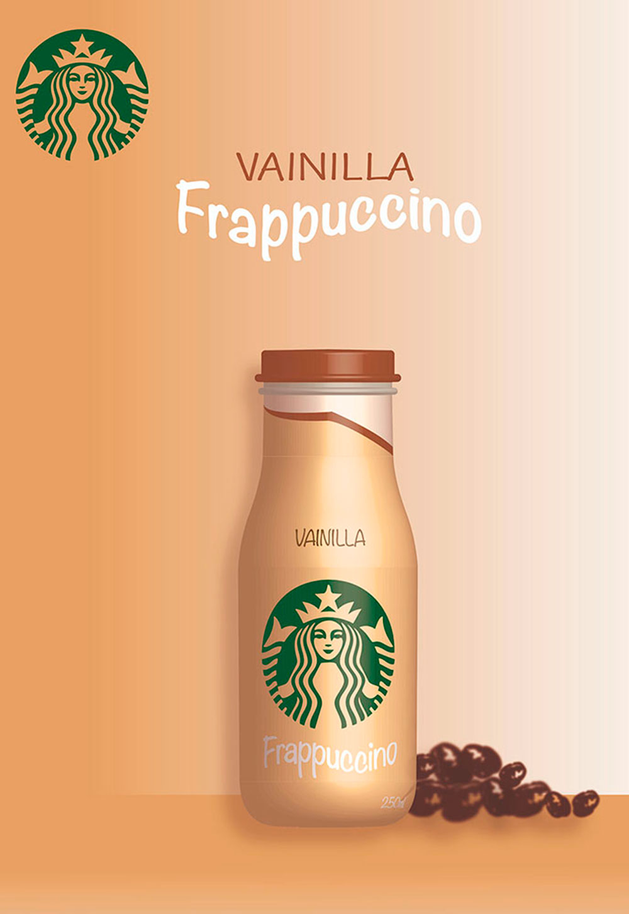
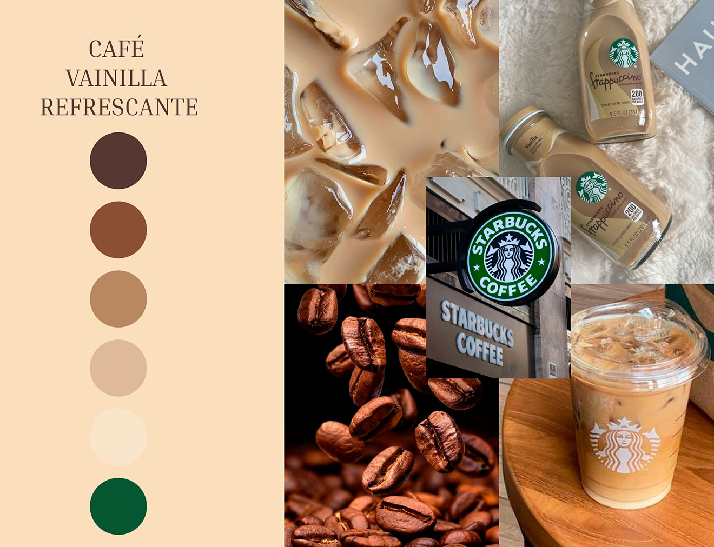
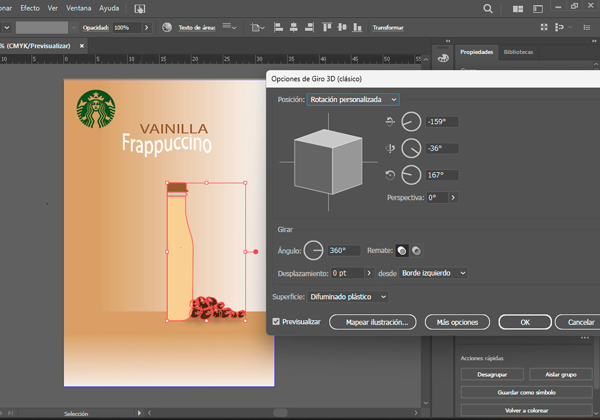

Descripción del proyecto
Este diseño publicitario fue creado en Adobe Illustrator para resaltar la botella de Frappuccino sabor vainilla de Starbucks, modelada en estilo 3D. Se utilizaron los tonos característicos de la marca, como el verde y marrón, y texturas que recuerdan los ingredientes naturales del café. La botella es el foco central, complementada con granos de café en la base para reforzar la esencia del producto. La tipografía y los colores reflejan el estilo visual de Starbucks, transmitiendo frescura y elegancia en una composición limpia y atractiva.
Cliente
Starbucks
Tiempo de desarrollo
2 semana
Si necesitas algo como esto, no dudes en contactarme.
ContáctameTécnologias utilizadas
Revisa este proyecto en


